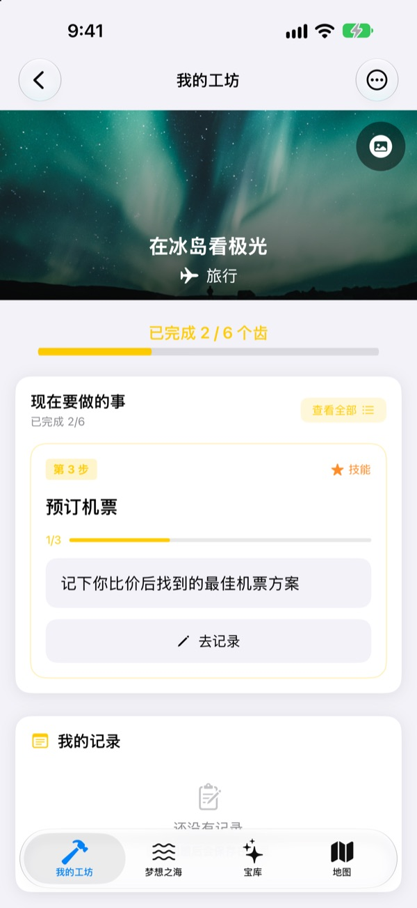
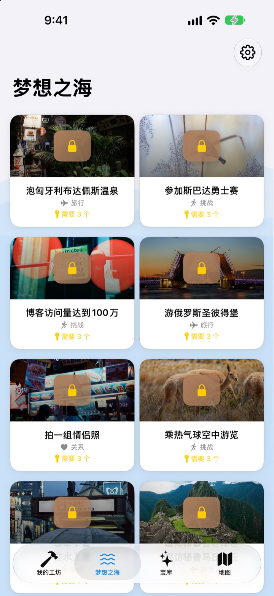
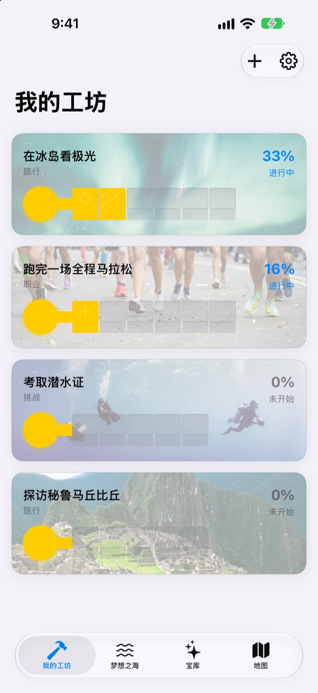
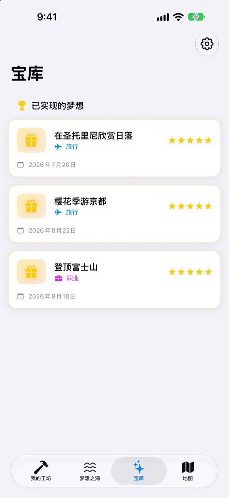

愿望清单，
别只是写下来
选一个梦想，实现它的一个个小步骤会变成钥匙上的齿。每天回答一步，不知不觉间，梦想宝箱就打开了。
一次购买即可使用全部功能，没有订阅，也没有广告。

亲手做好这把钥匙
冰岛极光这个梦想只剩最后两步。每个问题写一句回答（空着也行），再点“下一步”，齿就会补上；全部补齐后就能打开宝箱。
写下的愿望清单，后来就忘了？
“看极光”太大了，不知道从哪里下手，于是在清单上一躺就是好几年。寻梦把这个梦想拆成今天就能做的小步骤，比如查季节、存预算、订机票，并且只给你看现在要做的那一步。
从 590 多个梦想里挑选
旅行、体验、成就、健康、学习、关系。六大领域的梦想装在箱子里，漂浮在梦想之海上。把喜欢的箱子带回我的工坊，实现它的步骤已经拆好了。
清单里没有的梦想，写下标题、领域和步骤就能自己创建。

一次一个齿，今天做今天的
在我的工坊里，每个梦想的钥匙完成到哪儿一目了然。现在要做的步骤在最上面，回答准备好的问题，就能补上一个齿。
回答和照片都会存进我的记录，还能在进展时间线里回顾一路走来的过程。

实现的梦想放进宝库，想去的地方标在地图上
补齐所有齿就能打开宝箱，实现的梦想会连同日期存进宝库。暂停的梦想也放在那里，随时可以重新开始。
有地点的梦想会集中显示在地图上，想去的地方一眼就能看到。

三步就能开始
- 1
选一个梦想
在梦想之海点一个箱子，再点“带回我的工坊”。
- 2
回答今天这一步
逐个回答最上面那一步的问题，就能补上一个齿。
- 3
打开宝箱
所有齿补齐后钥匙就做好了，可以打开梦想宝箱。
梦想之海的六大领域
- 旅行
- 在冰岛看极光 · 在圣托里尼欣赏日落
- 体验
- 体验跳伞 · 体验滑翔伞
- 成就
- 跑完一场全程马拉松 · 徒步珠峰大本营
- 健康
- 完成20个引体向上 · 练出腹肌
- 学习
- 流利说英语 · 流利说法语
- 关系
- 和父母一起环游世界 · 和朋友在济州岛住一个月
每个领域都有近百个梦想。自己的梦想可以在我的工坊里用“添加新梦想”创建。
一次购买，全部拥有
App 本身
- 590 多个梦想和每一步的问题
- 创建自己的梦想
- 带照片的我的记录和进展时间线
- 宝库和地图
- 养梦模式
- 今后的更新
支持开发者（自愿）
- 觉得好用时，可以在设置里送一点小费
- 小费不会解锁任何功能，不送也能使用全部功能
每次单独支付，不是订阅。
App 内没有额外付费的功能，无需账户，没有广告。
常见问题
怎么开始？
在“梦想之海”标签页点一个喜欢的箱子，再点“带回我的工坊”。在我的工坊回答当前步骤的问题，齿会一个个补上。全部补齐后就能打开宝箱。
可以添加自己的梦想吗？
可以。在我的工坊点“添加新梦想”，填写梦想标题、领域和实现它的步骤即可。
怎样暂停或重新开始一个梦想？
在进行中梦想的菜单里点“放弃这个梦想”，它会移到宝库的“暂停的梦想”。在那里点“重新开始”就会回到我的工坊，也可以点“彻底删除”删掉。
养梦模式是什么？
这是用登山的方式管理梦想的界面，可以在设置 > 显示设置中开关。你可以像管理项目一样，为每一步设定截止日期，并管理费用、时间等障碍。
照片显示不出来。
部分梦想的背景照片需要从网络下载，请确认已连接网络。没有网络时会显示默认图片。
记录能转到新 iPhone 上吗？
记录不需要账户也不同步，只保存在这台设备上。用 iCloud 备份或电脑备份恢复新 iPhone 时，会和其他 App 的数据一起转过去。
App 里有需要另外付费的功能吗？
没有。下载 App 后就能使用全部功能。设置里的小费只是想表达感谢时的自愿选择。
我的梦想和记录会被发送到别处吗？
不会。没有账户，也不使用广告或分析工具。你写下的梦想、记录和照片只保存在这台设备上。
怎么联系你们？
错误反馈、功能建议或其他任何事都欢迎告诉我们。可以在 App 设置里点“发送反馈”，或者通过 Instagram 私信（@lee25_ios）联系。
有疑问或遇到问题，请发邮件到 leeo@kakao.com。